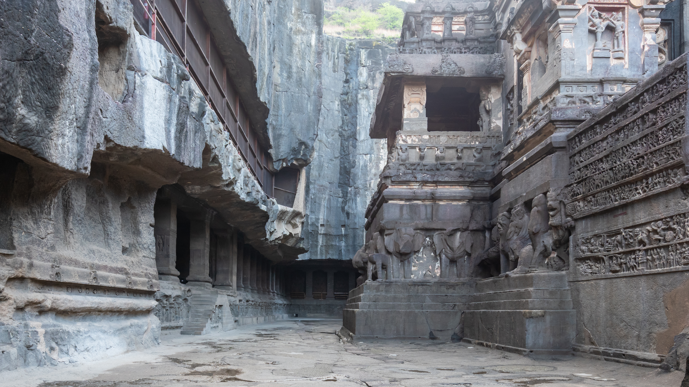

Across India
Explore regional heritage, geographic clusters, temple architecture, and living vernacular traditions across Northern, Southern, Eastern, Western, and Central India.
Explore India
“Thousands of years of artistic expression, from rock shelters to contemporary studios.”
No artworks or monuments matched your selected filters or search terms.
Expand your exploration from chronological time to geographic diversity across India’s regions and studio synthesis.
Explore regional heritage, geographic clusters, temple architecture, and living vernacular traditions across Northern, Southern, Eastern, Western, and Central India.
Explore IndiaStep into the digital studio to combine indigenous tribal motifs, Mughal fine lines, and classical iconography to compose your own modern Indian art fusion.
Enter The Fusion StudioDescription